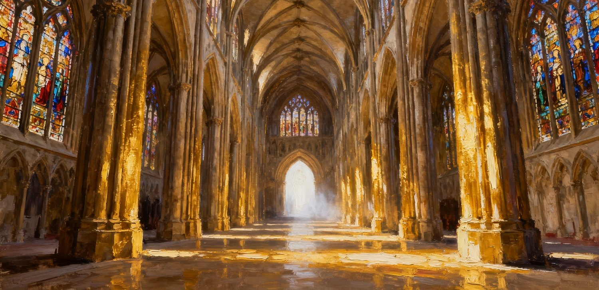
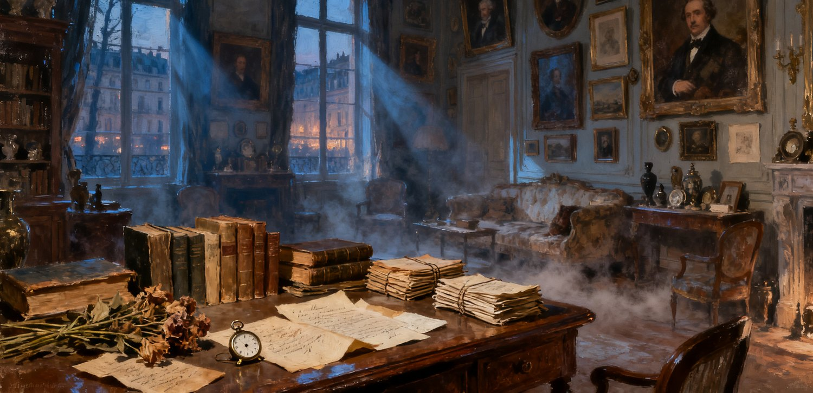
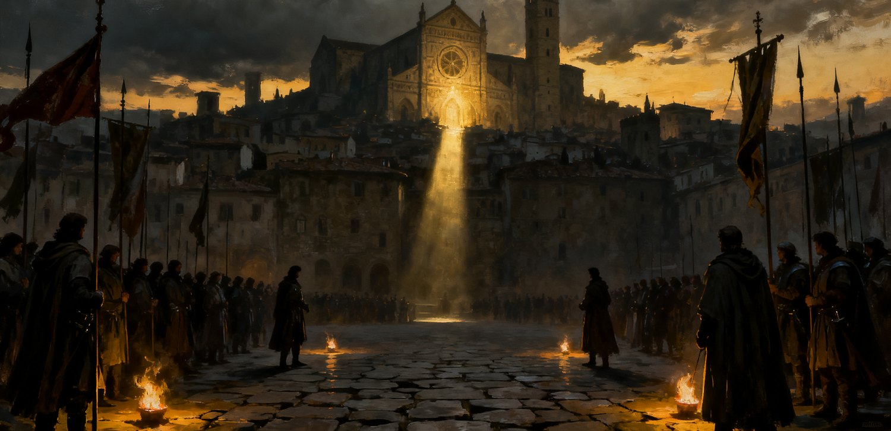
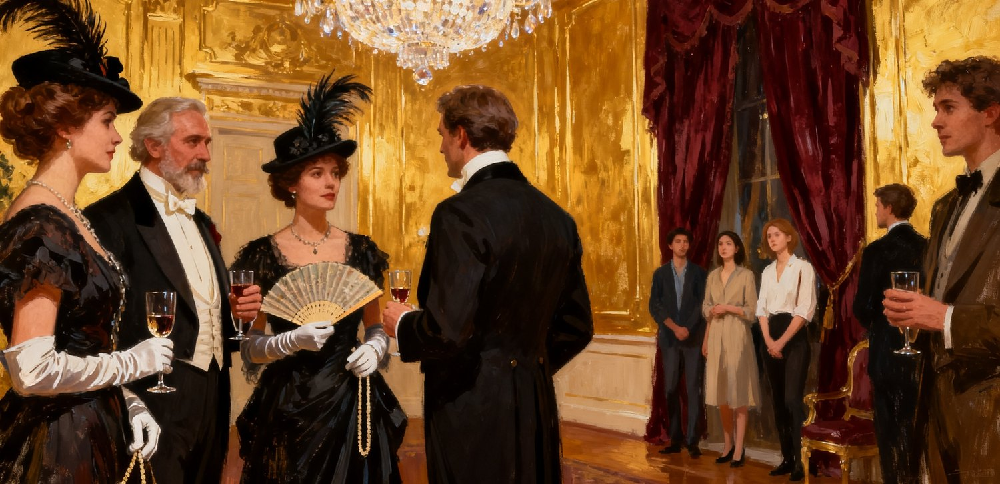

我常常觉得，但丁的《神曲》与普鲁斯特的《追忆似水年华》，虽然相隔六百年，在文学创作上却有着惊人的相似之处。
但丁的《神曲》，就像一座宏伟的中世纪大教堂。它拥有严密而庞大的结构，处处可见如乔托绘画般精妙的构思。地狱、炼狱与天堂层层展开，构成一个完整的宇宙。无论整体的思想高度，还是局部的艺术细节，都令人叹为观止。

然而，后世许多文学家，包括普鲁斯特，未必认同但丁的宗教信仰与道德观。
但丁相信存在一种绝对的善恶秩序，并依据这种秩序，把人的灵魂安排在天堂、炼狱或地狱之中。现代作家却未必相信，一个人的善恶与命运，可以由某种永恒的道德法则来裁定。
但这并不妨碍他们敬仰但丁。
就像一个不信教的人走进古老的大教堂，依然会被建筑的宏伟、壁画的美丽，以及创造者非凡的想象力所震撼。
不相信教堂里的上帝，并不妨碍一个人欣赏教堂本身。
在我看来，普鲁斯特这样的作家，完全可能把但丁当作文学创作上的榜样。他们未必接受但丁的道德体系，却会向往他建造文学世界的能力：把复杂的思想、众多的人物与事件组织起来，创造一座如宫殿般宏伟而精巧的文学建筑。
更有意思的是，这两部作品不仅都是宏伟的宫殿，也都像是一座美术馆。
但丁把历史、传说以及自己时代形形色色的人物，收集到《神曲》之中。他让一个个灵魂讲述自己的爱情、欲望、痛苦、罪恶与命运。每个灵魂都像一幅独立的绘画，拥有自己的故事、姿态与色彩。
普鲁斯特也做着相似的事情。
他观察生活中遇见的各种人物，从贵族、艺术家到仆人、情人，从沙龙到海滨，从童年到衰老。他把这些人物与事件放进记忆的世界里，反复观察、描绘，赋予他们各自不同的色彩。
两个人都像热衷于集邮的收藏家，只不过他们收藏的是人类精神。

爱情、嫉妒、骄傲、虚荣、忠诚、背叛、贪婪、勇气、痛苦与绝望，在他们的作品中，都拥有各自独特的形态。
许多人物与事件，各有不同的色彩。它们既可以作为独立的艺术品供人欣赏，又共同构成一座庞大的精神世界。
而且，两部作品都具有一种百科全书式的雄心。
但这不是通常意义上知识的百科全书，而是一个时代的精神百科全书。
一个时代的精神，并不只是某位伟大作家的思想。
每个人都有自己的问题、欲望、信仰、痛苦与理解。无数不同的人，他们的思想相互碰撞，命运彼此交织，才共同构成一个时代。
而在这些形形色色的人物背后，往往有着一个时代共同面对的问题。
伟大的作家不仅在思考自己的问题，也在努力理解其他人如何思考同样的问题。
他们不是仅仅把自己写进文学，而是把自己与他人共同生活的整个时代，写进文学。
那么，但丁与普鲁斯特使用了如此相似的文学方法，为什么创造出来的作品却如此不同？
我想，首先是因为他们身处不同的时代，面对着不同的问题。
· · ·
一、但丁的时代：谁代表上帝的正义？
但丁身处一个政治混乱而血腥的时代。
意大利城邦之间战争不断，城邦内部党派纷争，教皇与世俗君主也在争夺权力。但丁自己就深陷政治斗争，最终被佛罗伦萨放逐。
在这样的世界里，人们渴望生存与安宁，希望宗教能够提供一种超越世俗政治的正义与秩序。
宗教告诉人们什么是美德，什么是罪恶，什么样的人应当得到奖赏，什么样的人应当受到惩罚。
但是，事情却产生了一个巨大的矛盾。
人们希望用宗教缓和政治矛盾，却也因此给了宗教势力介入政治的机会。
宗教逐渐成为一种政治力量。
它拥有精神权威，却未必在所有地方都拥有与世俗君主相当的军队和直接统治能力。
因此，教会的政治影响力，不仅来自自身的土地、财富与武装，也来自不同政治势力对它的需要。
当城邦、君主与政治集团彼此争斗时，教会可以通过支持一方、反对另一方，或者以调停者的身份介入，扩大自己的影响。
更危险的是，教会并不一定只是在解决已经存在的矛盾。
它也可能为了自己的政治利益，利用甚至激化社会矛盾，再以维护和平与正义的名义进行调停。
这样，冲突本身就可能成为教会维持政治影响力的一种资源。
当社会各方需要它调停时，它就拥有重要的地位；当各方不再需要它时，它的一部分政治影响力反而可能减弱。
这是一种危险的权力逻辑：
一个原本应该帮助社会消除冲突的组织，可能因为冲突而获得权力，甚至逐渐产生维持冲突的利益。
当然，教会的政治权力有漫长的历史，不能简单归结为制造矛盾。也不能认为中世纪的战争都是教会挑起的。
但在但丁亲身经历的政治斗争中，教皇利用宗教权威介入世俗利益冲突，确实是非常现实的问题。
尤其令但丁愤怒的是，教会有时并不仅仅参与战争，还可能为了自己的利益主动推动战争与政治迫害。
例如，教皇卜尼法斯八世利用政治势力介入佛罗伦萨的党争，最终使但丁所属的白党失势，但丁本人也因此流亡。
在《地狱篇》第二十七歌中，但丁甚至描写了教皇为了击败政治敌人，利用宗教权威诱使一位已经悔改的军事谋略家再次使用欺骗手段。

这已经不仅仅是教士贪婪或腐败的问题。
教会原本应该帮助人们远离罪恶，却可能为了自己的利益，引诱人们犯罪。
它原本应该帮助人们寻找和平，却可能成为挑起冲突的力量。
它原本应该约束世俗权力，却可能自己成为最需要约束的权力。
我觉得，这正是但丁对教会愤怒的重要原因。
宗教应该告诉人们什么是美德，什么是罪恶，而不是自己下来与人们争夺财富与权力，更不应该为了自己的利益制造战争。
世俗君主为了利益发动战争，人们至少知道他们是在争夺利益。
但当教会也参与争夺，却可能把政治利益包装成上帝的意志。
于是，一个更加可怕的问题出现了：
谁有权解释上帝的意志？
谁能够代表正义？
如果宗教领袖也为了利益而制造罪恶，那么又该由谁来审判他们？
但丁在《神曲》中，毫不客气地把贪婪、腐败的教皇送进地狱。
他不是因为不相信上帝而批判教会，恰恰是因为他相信，即使是代表上帝的人，也不能凌驾于善恶之上。
但丁希望宗教回到它本来的使命。
在他的政治思想中，精神权力应当引导人的灵魂，世俗权力则应承担现实世界的治理。两种权力不应该相互吞并。
当教会也成为利益争夺者，它就不再只是人们寻求正义的地方，而成为需要接受正义审判的对象。
因此，但丁的《神曲》虽然充满天使、魔鬼、炼狱与天堂，看起来无比奇幻，但他真正关心的，却是现实中极其迫切的问题：政治、战争、权力、罪恶与正义。
他试图建立一种超越现实政治的道德秩序，借此审判自己时代的混乱。
但丁用一个想象的世界，审判真实的世界。
· · ·
二、普鲁斯特的时代：谁拥有真正的高贵与美？
普鲁斯特身处完全不同的时代。
他所描写的主要是法国美好年代的上层社会。
与但丁时代的意大利城邦相比，这个社会拥有较为稳定的制度、繁荣的经济，以及丰富的艺术与文化生活。
当然，法国仍然存在政治冲突、阶级矛盾与社会不平等。但在普鲁斯特熟悉的富裕社交圈里，人们有更多闲暇关注艺术、爱情、名望、礼仪与审美品位。
而这个时代又正经历着重要的社会变化。
古老贵族的传统地位逐渐受到挑战，资产阶级则凭借财富、教育与事业成就不断上升。
两个阶层都在努力定义自己的美德、优越性与话语权。
贵族强调血统、传统、礼仪与教养，认为资产阶级虽然有钱，却缺乏真正的品位。
资产阶级则强调财富、才华、教育和个人成就，认为贵族的优越感毫无道理，不过是依靠祖先留下的头衔生活。
他们彼此看不起，却又彼此羡慕。
贵族嘲笑资产阶级俗气，却羡慕他们的财富；资产阶级嘲笑贵族虚荣，却又渴望得到一个贵族头衔。

他们批评对方的价值观，却不断被对方所拥有的东西吸引。
而艺术与审美，也成为这种竞争的重要部分。
贵族欣赏古典艺术、古老的建筑与传统的优雅，嘲笑资产阶级的新趣味浅薄而浮华。
资产阶级则推崇新的艺术、新的生活方式，认为贵族的审美陈旧、矫饰，缺乏创造力。
双方不仅在争夺财富与社会地位，也在争夺谁有资格定义美。
这并不意味着文艺复兴绘画与印象派严格分别属于贵族和资产阶级。实际上，双方的艺术趣味远比这种划分复杂。
但古典与现代、传统与创新，确实构成了普鲁斯特不断观察的审美世界。
我觉得，年轻的普鲁斯特小说叙述者，起初很天真地把这些争论看成了真正的艺术问题。
他想弄明白，究竟哪个阶层更懂得美，哪一种文化更加高尚。
于是，他努力欣赏、研究并比较不同的艺术。
他迷恋波提切利笔下古典而理想化的女性，也被印象派画家笔下的光线、海洋与现代生活吸引。
他以为通过艺术与审美，最终能够判断两个阶层究竟谁更加高贵。
他原本相信，艺术品位是一种真正的精神能力，能够帮助自己分辨人的高尚与庸俗。
但随着年龄增长，他真正走进了这两个世界，认识了形形色色的人。
他才逐渐发现，事情并不是自己想象的那样。
· · ·
三、从艺术走向心理
贵族并不一定真正喜欢或懂得古典艺术。
他们可能拥有精美的收藏、古老的家具和显赫的文化传统，却只是把这些东西当成身份与教养的装饰。
而资产阶级也不一定更加开放、进步。
他们同样有自己的沙龙和小圈子，在圈子里互相欣赏、互相赞美，对圈子之外的人与艺术不屑一顾。
维尔迪兰夫人的小圈子，就是一个很好的例子。
那里似乎推崇艺术、才华与自由，却也有严格的内部规则。一个人是否受到欢迎，有时并不取决于他是否真正理解艺术，而是取决于他是否认同圈子的趣味。
普鲁斯特逐渐发现：
贵族以传统建立优越感，资产阶级以新的趣味建立优越感。他们推崇不同的艺术，内心却有着相似的虚荣、嫉妒、势利与自我欺骗。
他们嘲笑对方的品位，有时并不是因为真正理解艺术，而是为了证明自己比别人高贵。
他们表面上争论什么是美，实际上也在争论谁有资格被尊敬。
普鲁斯特原本以为自己在研究艺术，后来却发现，自己走进了一个更加复杂的世界——人的心理。
而这种发现并没有停留在对别人的观察上。
当他自己陷入爱情，尤其是小说叙述者与阿尔贝蒂娜的关系中，他发现自己也同样不可理喻。
他会嫉妒、怀疑，想要占有对方。甚至当爱情已经不再带来快乐，他仍然无法放手。
一个如此聪明、敏感，拥有非凡审美能力的人，却无法用理性摆脱自己的欲望与痛苦。
他原本以为自己能够看透别人的荒唐，后来却发现，自己也无法理解自己的内心。
这使普鲁斯特的文学越来越深入人类精神的深处。
他不仅描写贵族与资产阶级的虚荣，还描写爱情中的嫉妒、占有、怀疑与自我欺骗。
而他越是深入观察，就越发现人心是如此奇怪、矛盾，甚至近乎病态。
但他并没有简单地把这些人写成坏人。
虚荣的人可能拥有真诚的感情，嫉妒的人也可能热爱艺术，聪明的人也可能被自己的欲望欺骗。
人的精神远比社会阶层与道德标签复杂。
普鲁斯特年轻时以为自己在欣赏艺术，后来发现自己在研究别人，最终才发现，他最难理解的那个人，原来是自己。
· · ·
四、最美的不是事物，而是对事物的幻想
不过，我觉得普鲁斯特最终发现了一个比社会心理更加深刻，也更加动人的问题。
年轻时，他向往斯万家那边，也向往盖尔芒特家那边。
在他的想象中，那是两个完全不同的世界。
古老的姓氏、城堡、贵族的优雅、艺术家的才华，以及遥远的海滨，都充满了神秘而美丽的色彩。
他渴望走进去，认识那些人，了解他们的生活。
他以为美存在于那些人、那些地方和那些生活方式之中。
后来，他终于走进了这些世界。
他认识了曾经遥不可及的人物，也看清了他们的虚荣、嫉妒、欲望与荒唐。
他曾经渴望的爱情，也逐渐显露出怀疑、占有与痛苦。
他对现实的理解越来越深，内心却越来越失望。
因为他发现，最美的往往不是事物本身，而是人对事物产生的幻想。
当他还不了解盖尔芒特家族时，那个姓氏便足以让他产生无数美丽的想象。
当他还没有抵达巴尔贝克时，那个遥远的海滨已经在他的心中充满诗意。
当他爱上一个女人时，他爱的也不仅是她真实的模样，还有自己赋予她的神秘、魅力与无限可能。
可是一旦真正走近，幻想便逐渐消失。
现实并不一定丑陋，只是它往往没有幻想那么美丽。
这也解释了一个奇怪的现象：人有时终于得到了曾经向往的东西，却失去了向往它时的幸福。
但是，普鲁斯特并没有简单地否定那些幻想。
它们虽然未必符合现实，却曾经带来真实而强烈的美感。
如果一个人因为幻想而感受到美，那么即使幻想不是真的，美就不是真的吗？
我觉得，这正是《追忆似水年华》最动人的地方之一。
普鲁斯特无法重新变成那个天真的年轻人，却可以通过记忆与文学，重新发现当年那些幻想的色彩。
当然，小说最终的艺术发现不只是恢复年轻时的幻觉，也包含对幻想破灭之后的现实与痛苦的重新理解。
但有一个情感事实始终令人动容：
他年轻时以为美藏在遥远的世界里，直到走遍那些世界，才发现，最美的原来是当年尚未出发时，自己心中的幻想。
· · ·
五、两条道路，最终通向同一个世界
我觉得《追忆似水年华》还有一个特别精妙的结构，几乎把普鲁斯特对阶层、心理与时间的理解浓缩在了一起。
那就是斯万家那边与盖尔芒特家那边。
在童年的主人公眼中，两条道路似乎通往两个完全不同的世界。
一边联系着斯万家族、资产阶级生活与童年的记忆。
另一边通向古老的盖尔芒特家族，充满贵族的历史、头衔与传说。
然而，随着小说展开，主人公发现，两边的人不断彼此接近。
贵族需要资产阶级的财富，资产阶级渴望贵族的头衔。
他们通过社交、婚姻与财富，不断重新组合自己的社会关系。
这些关系背后，既有爱情、虚荣与嫉妒，也有现实的经济利益。
婚姻有时不仅是两个人的结合，也是财富、血统和社会地位的交换。
普鲁斯特虽然主要描写心理，却并没有忽略上层社会中财富、血统、联姻与权力的运作。
最精彩的是小说的结尾。
斯万的女儿吉尔贝特，嫁给了盖尔芒特家族的罗贝尔·德·圣卢。
他们的女儿圣卢小姐，同时继承了两个家族的血脉。
原本在主人公童年时期看似完全分离的两条道路，最终在一个少女身上汇合了。
两边的人曾经如此认真地争论谁更加高贵、谁更有教养、谁拥有真正的美，到了下一代，却已经成为了一家人。
而圣卢小姐后来选择的丈夫，并不是一位拥有显赫头衔的贵族，而是一位并不出名的文学家。
曾经让祖辈如此在意的身份与阶级界限，到了她这里，似乎已经没有那么重要。
这正是时间带来的巨大讽刺。
原本看似永恒的优越性，其实不过是一个时代暂时认可的社会价值。
财富会转移，家族会联姻，头衔会改变，曾经高不可攀的身份，也会渐渐失去原来的意义。
普鲁斯特最后发现，斯万家那边与盖尔芒特家那边，不仅在地理与家族关系上可以相通，在人性上也从来没有真正分离。
两边拥有不同的传统、不同的审美与不同的生活方式，却有着相似的虚荣、欲望、嫉妒和对社会认可的渴望。
两条看似通往不同世界的道路，最终通向了同样复杂的人性。
· · ·
六、一个时代的消逝
但普鲁斯特描写的那个世界，最终也走到了历史的转折点。
第一次世界大战爆发了。
曾经繁荣、精致的欧洲上层社会，开始经历战争、死亡与社会秩序的变化。
过去，人们可以为了头衔、品位与社交地位争得不可开交；战争却使生存、暴力、政治与死亡重新成为生活中无法回避的问题。
当然，战争并没有让艺术、社交和虚荣突然消失。普鲁斯特在《重现的时光》中，甚至描写了上层社会如何把战争也变成一种社交谈资与时尚。
但时代毕竟改变了。
那些原本支撑贵族世界的传统、身份与社会关系，正在发生深刻变化。
而就在战争期间，弗洛伊德也在思考一个相似的问题。
1915年，他发表《战争与死亡时期的思考》，反思欧洲文明的道德理想为何无法阻止战争中的野蛮行为。
人们原本相信，文明、教育与道德的发展，能够使人摆脱残酷与暴力。
战争却使人们发现，文明的外表并不意味着人类已经摆脱野蛮。
我觉得，这与普鲁斯特对上层社会的观察，有一种很深的呼应。
普鲁斯特发现，优雅的社交生活并不意味着人们已经摆脱虚荣、嫉妒与残酷；弗洛伊德则发现，高度发达的文明，也并不意味着人类已经摆脱暴力。
文明可以改变人类欲望的表现方式，却未必能够消除欲望本身。
在相对和平繁荣的社会中，人们把许多欲望投入艺术、名望、爱情与社会地位的竞争。
而当战争来临，这些欲望又可能以更加直接、残酷的方式表现出来。
这使我重新想到但丁。
但丁在战争与政治动乱中，描写人类的贪婪、嫉妒、背叛、权力欲望与对正义的渴望。
普鲁斯特则在繁荣而精致的上层社会中，发现了相似的心理。
原来，但丁与普鲁斯特并不是在描写两种不同的人性，而是在不同的历史环境中，发现了同样复杂的人。
而第一次世界大战，也使普鲁斯特笔下的那个时代逐渐远去。
《追忆似水年华》虽然写到了战后，但它最核心的社会世界，已经成为一个正在消失的过去。
普鲁斯特不仅失去了青春、爱情与幻想，也失去了那个曾经让这一切显得如此美丽的时代。
他原本想寻找失去的自己，最终却在文学中保存了一个失去的时代。
· · ·
七、为什么相似的方法，创造了如此不同的文学？
回过头来，再看但丁与普鲁斯特，我觉得最有意思的问题仍然是：
他们使用了如此相似的文学方法，为什么创造出来的作品却如此不同？
两个人都试图把一个时代的人物、事件、思想与情感，收藏进一座宏伟的文学宫殿。
他们都深入人类精神的深处，既探索自己的问题，也试图理解其他人的思想。
他们都拥有一种百科全书式的文学雄心，希望通过形形色色的人物，展现整个时代的精神世界。
但他们所面对的时代问题不同。
但丁生活在战争与政治动乱之中。人们向宗教寻求安宁与正义，却发现宗教不仅卷入了权力争夺，有时还为了自己的利益利用甚至制造冲突。
他试图建立一种永恒的道德秩序，告诉人们什么是善，什么是恶，以及人应当如何生活。
普鲁斯特则生活在贵族衰落、资产阶级兴起的时代。
他最初被两种阶层不同的美所吸引，试图通过艺术与审美理解他们。后来，他发现双方相似的虚荣、嫉妒与欲望，又在自己的爱情中发现了同样不可理喻的心理。
他从艺术与社会观察，逐渐走进了人类心理的深处。
最终，他发现人的美感常常来自幻想，而那些失去的幻想，又能够在记忆与艺术中重新获得生命。
因此，两部作品呈现出截然不同的气质。
但丁的世界更加奇幻，却有着非常强烈的现实关怀。
他描写地狱、炼狱、天堂、天使与魔鬼，却始终关心政治、宗教、权力、战争与正义。
他用幻想描绘现实。
普鲁斯特的世界则更加真实、日常，也更加感性。
他描写沙龙、宴会、旅行、爱情与社交生活，却不断深入那些难以观察、无法解释的心理世界。
他用现实描绘幻想。

但丁想知道，人应当如何生活。
普鲁斯特则想知道，人为什么会这样生活，为什么会这样感受。
当然，这不是说但丁没有心理深度，普鲁斯特没有道德与社会关怀。恰恰相反，两部作品都远比这样的区分复杂。
但它们各自的精神重心确实不同。
但丁在现实的混乱中寻找永恒的秩序；普鲁斯特在现实的繁华中发现人心的幻想，又在幻想破灭之后，通过记忆寻找失去的美。
他们的文学方法可以如此相似，作品却如此不同，因为他们不仅拥有不同的性格、审美与思想，也身处不同的时代，面对着不同的问题。
而这也许正是伟大的百科全书式文学最重要的特征。
它不仅收藏了一个时代形形色色的人物，还收藏了那个时代的人们共同面对的问题，以及他们各不相同的答案。
一个时代的精神，并不只存在于伟大作家自己的思想里，而存在于无数人的生活、欲望、信仰、矛盾和命运之中。
伟大的作家把它们收集起来，组织成一座宏伟的文学宫殿。
其中每个人物、每个事件、每段爱情与痛苦，都像一幅拥有独特色彩的画作，可以独立欣赏。
而所有画作又共同构成了一部时代的精神百科全书。
但丁把现实放进永恒，普鲁斯特把现实放进记忆。
他们都试图让那些原本会随着时间消逝的人物、故事与情感，获得某种持久的生命。
六百年过去，两座宫殿的风格截然不同。
一座庄严、黑暗、强烈，充满神圣的审判与对正义的追问。
另一座明亮、细腻、感性，充满记忆的光影与人心的幻想。
然而，在这两座宫殿中，我们依然能够看见同样的人类。
他们爱、嫉妒、贪婪、骄傲、痛苦，也渴望美、正义与永恒。
时代不同，人们面对的问题不同，伟大的文学也因此拥有不同的模样。
但那些构成时代精神的人性，却在六百年间，不断地重现。